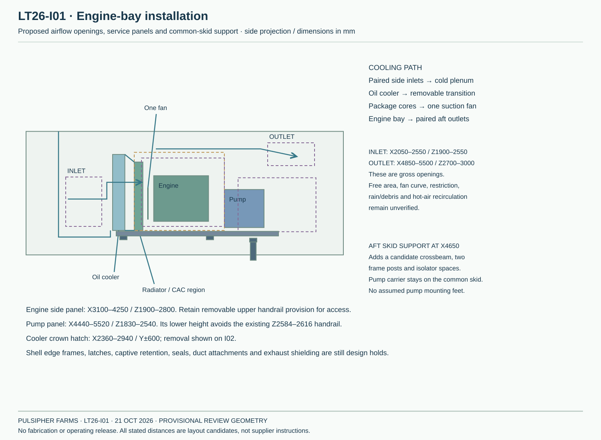
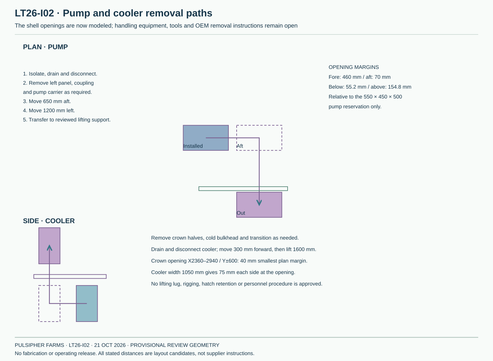
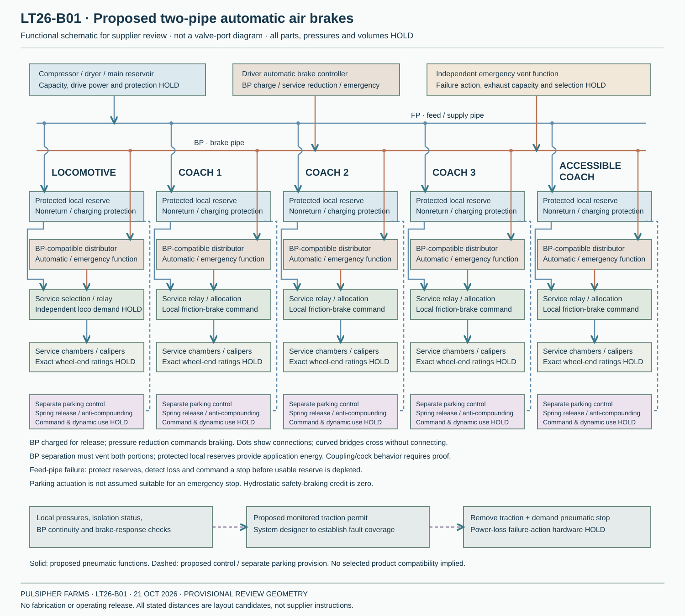

LT26 · INSTALLATION & CONTROLS
Cooling, access and connections around the quoted engine.
The eight-driver layout gains proposed shell openings, a removable cooling transition, an aft skid support and separate truck-connection corridors. The brake concept below covers the locomotive and all four coaches. Supplier ratings and fabrication dimensions remain open.
Engine bay and service openings

The cooler and radiator remain reservations within Tony’s package envelope. New ducts need independent supports and flexible seals. Final fan performance, heat rejection, core losses, hot-weather operation and exhaust shielding still require AIE review.
A path out through the shell

The pump panel and crown hatch are actual openings in this model. The stated margins apply only to the rectangular equipment reservations. Lifting, fittings, tools, hatch fasteners and edge reinforcement remain unfinished. Engine extraction and complete radiator/fan service are separate open tasks.
Turning and suspension connections
Use Truck connections to inspect the five colored routes at each powered truck: two hydraulic mains, a separate drain, service air and wiring. Body drops pass inboard of the running boards before reaching the lower yaw loops. The intermediate carrier and suspension-flex arrangement are conceptual; compound flexing still needs an approved solution.
| Current check | Result | Limit |
|---|---|---|
| Reference poses | 504: straight, 30 m left/right; six mass allowances and combined loading | Uses retained LT25 masses, not a finished updated mass model |
| Connection to component boxes | 0 cases with conservative-box conflicts; smallest gap 32.5 mm | Includes full wheel-disk boxes and running boards; excludes hollow shell/cab boxes, hose-to-hose and port leads |
| Final hose assembly | Not selected | Supplier bend radius, length, pressure, temperature, twist and fitting clocking remain HOLD |
Proposed complete-train brake circuit
Two distinct through lines: a feed pipe charges protected local reserves, while an automatic brake pipe carries application commands. Each vehicle needs a compatible automatic distributor and local service-brake equipment. Parking control remains separate.

This is a functional proposal for the brake-system supplier. Road-trailer relay valves and the PAN17/TRISTOP wheel-end candidates do not establish the automatic train-braking function by themselves. No pressures, valve order codes, reservoir volumes or stopping performance are selected.